Mauritius, a small gem in the Indian Ocean about 1,200 miles off Africa’s coast, is famed for its powdery white-sand beaches, turquoise lagoons, vibrant coral reefs, and teeming marine life.
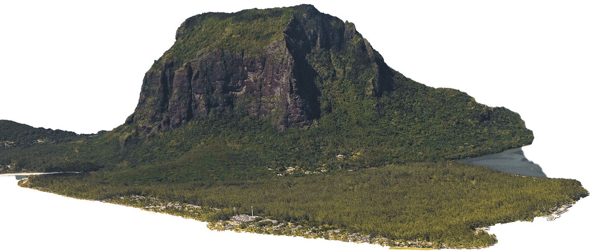
[ Source ]
>>>

[ 20.3484° S / 57.5522° E ]
>>
[ Source ]
MAURITIUS
[ Source ]
>>>
>>
[ Source ]
+
+
+
Bringing back the dodo, together

INdex
[ THE DODO ]
SOURCE
THE MISSION
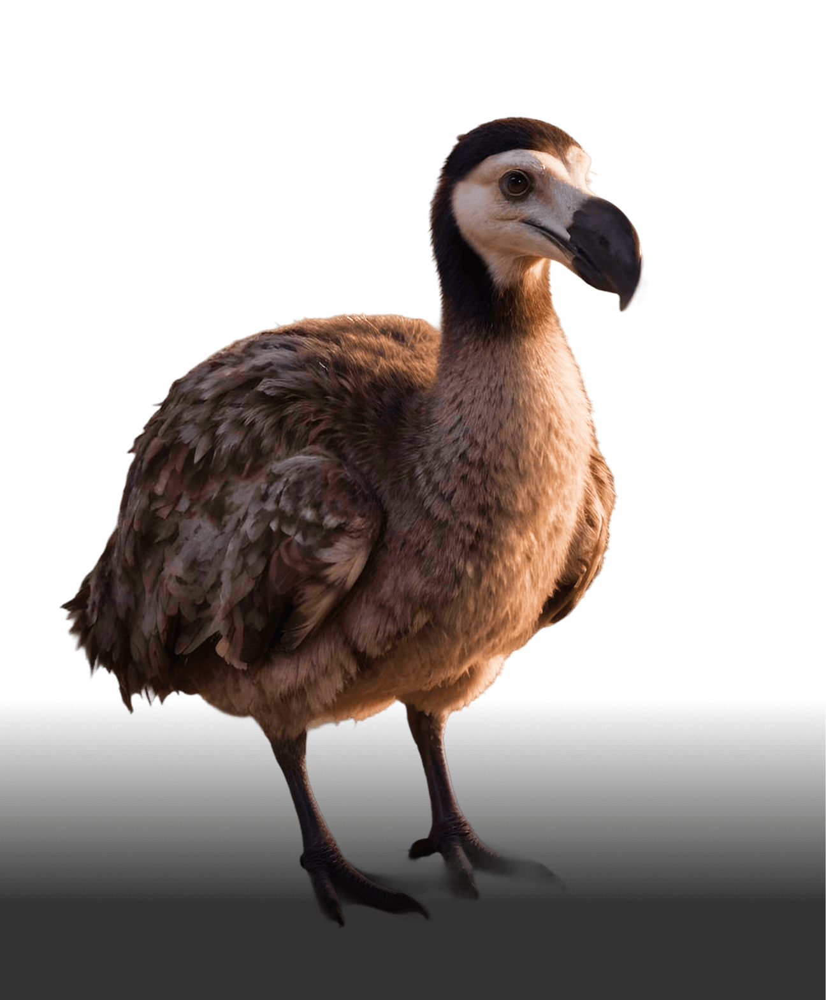
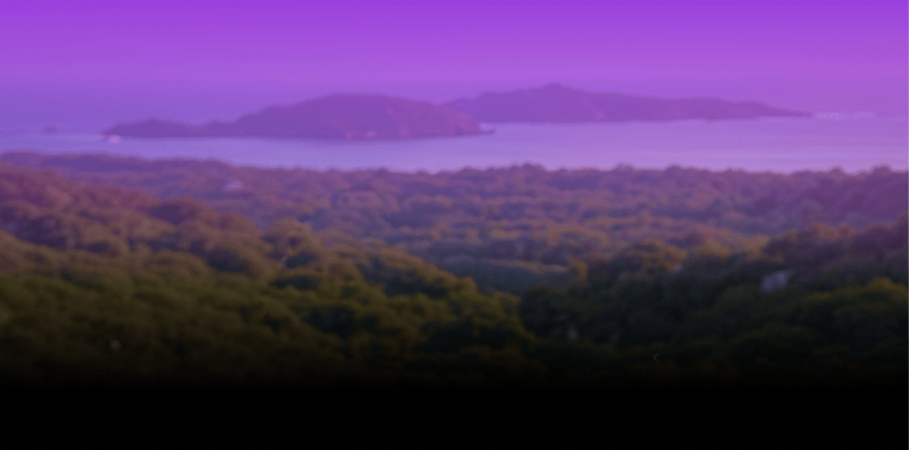
[ Source ]
/////////////////////////////////////////////////////////////////////////////////////////////////////////////////////////////////////////////////////
[ 103 ]
Restoration in Motion
Mauritius is a biodiversity treasure shaped by isolation and evolution, home to species found nowhere else on Earth. But centuries of human impact have fractured this fragile balance. Habitat loss, invasive species, climate change, and past extinctions have pushed many native plants and animals to the edge of survival, leaving ecosystems fragmented and vulnerable.
Today, the island’s greatest challenge is not preserving beauty, but preventing further loss—restoring degraded habitats, protecting remaining forests and reefs, and safeguarding endangered endemic species. Conservation efforts offer hope, but Mauritius’s future as a living biodiversity hotspot now depends on urgent, sustained action to stop decline and rebuild resilience.
Sector ///////////
[ THYLACINE LABWORK ]

+
+
+
+
DETERMINED TO GIVE THE DODO A CHANCE TO WALK THE EARTH ONCE MORE.
[ Index ]
++
ABOUT
Born from volcanic fire, Mauritius rose from the sea as a blank slate, its ecosystems shaped over centuries by birds, reptiles, and plants carried by wind, waves, and chance. Isolated and extraordinary, it evolved into a refuge for endemic species found nowhere else on Earth.
MAURITIUS
Though habitat loss, invasive species, and climate change have strained its ecosystems, conservation and restoration efforts are helping the island reclaim its biodiversity.
[
Source ]
1.3M
Human
POPULATION
With a population of approximately 1.3 million people, Mauritius is one of the most densely settled island nations on Earth, placing significant pressure on land, resources, and native ecosystems within a limited geographic footprint.
[
Source ]
/////////////////////////
788 SQ/MI
Square Miles of
Land Area
Spanning just 788 square miles, Mauritius packs an extraordinary range of habitats into a compact island, where forests, wetlands, reefs, and highlands exist side by side within a tightly constrained landscape.
[
Source ]
/////////////////////////
5k
ANIMAL
SPECIES
Despite its small size, Mauritius supports more than 5,000 animal species, including many endemic organisms found nowhere else, underscoring the island’s outsized importance in global biodiversity conservation.
[
Source ]
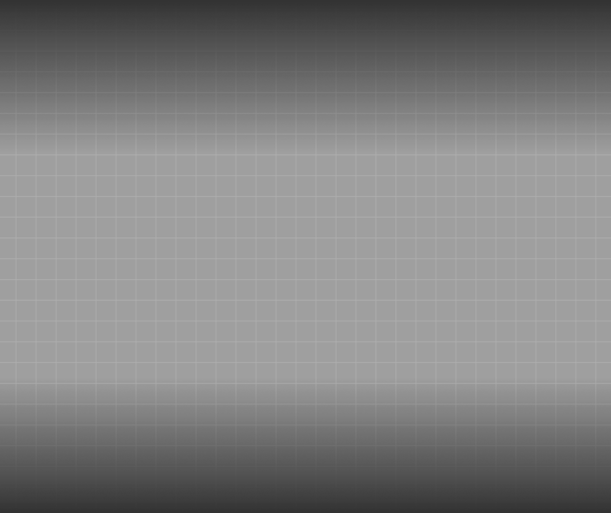
[ COLOSSAL LABS® ]
////////////////////////////////////////////////////////////////////////////////////////////////////////////////////////////////////
[ 101 ]
NOTABLE ENDEMIC SPECIES
[ MAURITIUS ]
[ CONSERVATION ]
Loss, Resilience, and Ecological Renewal
Mauritius is home to a mosaic of ecosystems including lowland and upland forests, coastal woodlands, volcanic highlands, freshwater wetlands, dry scrublands, offshore islets, and a vast coral reef system. These diverse biomes have shaped an evolutionary cradle for species found nowhere else on Earth. From its lush evergreen canopies to its windswept cliffs, the island once supported a web of interdependent life—much of which has been dramatically
altered by centuries of human activity. Today, Mauritius has lost more endemic species than any other country of its size. Invasive species, habitat destruction, and climate change have pushed many native organisms to the brink. But hope, resilience, and restoration endure. Thanks to ongoing conservation work, rewilding initiatives, and the stewardship of local communities, Mauritius continues to be a beacon for ecological rebirth.

[
Source ]
>>>
[
Source ]
>>>
■
DODO ■
READY FOR
RESURRECTION WARNING: This is AI CLSL—002
DODO ■
READY FOR
RESURRECTION WARNING: This is AI CLSL—002
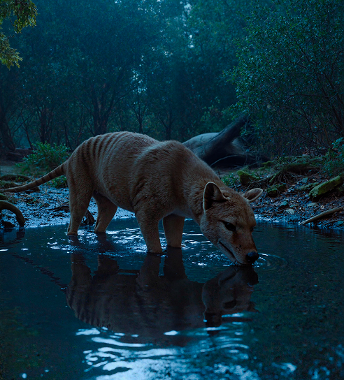
■Goniobranchus ■
READY FOR
RESURRECTION WARNING: This is AI CLSL—001
[ index ]
////////////////////////////////////////////////////////////////////////////////////////////////////////////////////////////////////////////
[ Core ]
MAURITIUS ECOSYSTEMS
VITAL FOR CONSERVATION EFFORTS
With its isolated island geography and tropical climate, Mauritius hosts a wide array of ecosystems, each supporting a remarkable diversity of native and endemic species:
+
+
+
+
+
+
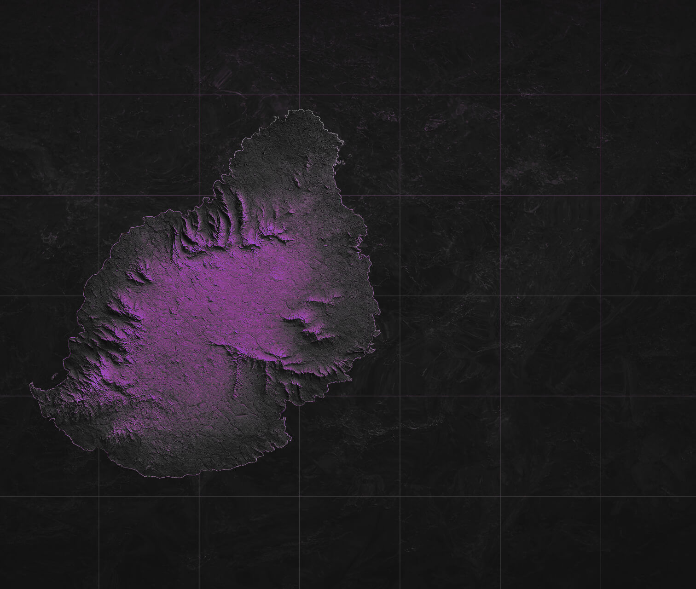
BIOME KEY
/////////////////////////
CSL-LABS
Tropical Evergreen Forests
Coastal & Marine Ecosystems
Wetlands & Marshes
Dry Forests & Scrublands
Heathlands & Upland Ecosystems
Islet Ecosystems
Lagoons & Coral Reefs
MAURITIUS
[ STORY UNIT ]
[ REVIVING THE WILD ]
CLSL LABS
HISTORY
Source
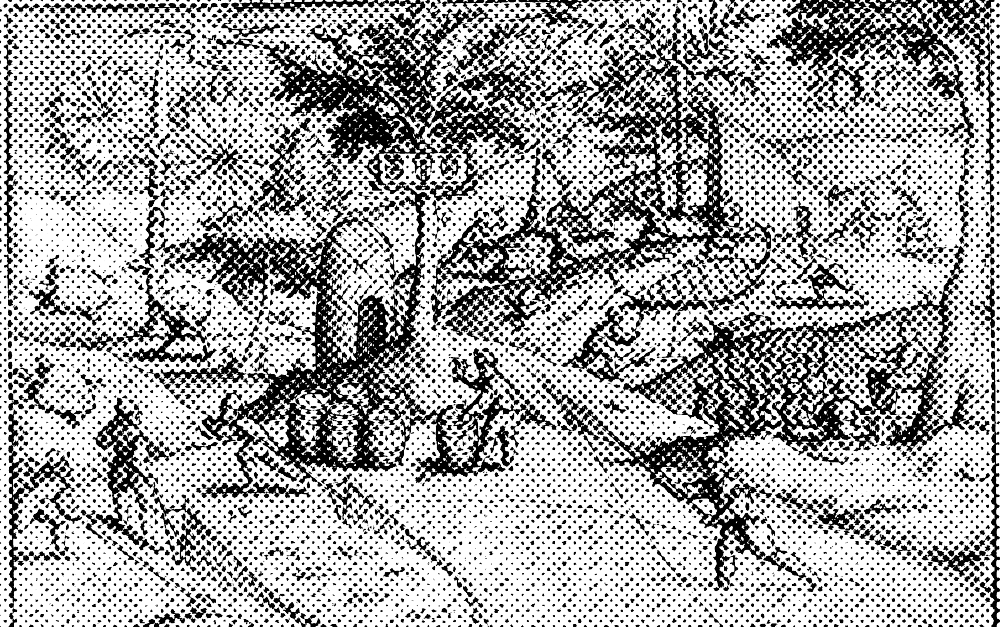
THE
ORIGIN
STORY:
FROM SAILORS
TO SETTLERS
Arrival by Sea
+

[
NO
ONE’S HOME ]
Before Human Settlement, Mauritius Was a Wildlife-Only Island
Mauritius was uninhabited by humans until it was first visited by Arab sailors around the 10th century and later by Europeans (Portuguese, Dutch, French) starting in the 16th century. When the Dutch settled there in the 1600s, they found no native human population — only the island’s unique wildlife.
A Nation Forged by Many
+
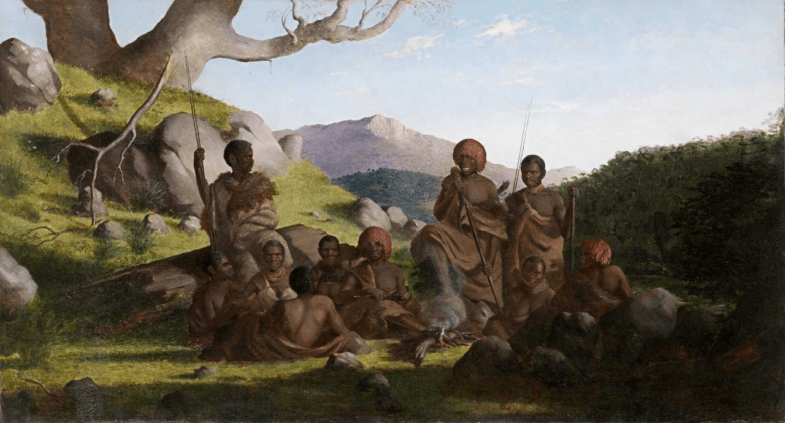
[
BUILT
BY MAURITIANS ]
Mauritius Has No Known Indigenous Population, Shaped Instead by
Centuries of Migration and Colonization.
The current population of Mauritius descends mainly from Indian, African, Chinese, and European settlers, brought over centuries through colonization, slavery, and indentured labor (particularly under French and British rule). So, while Mauritius has a rich cultural mix today, there is no known Indigenous human group that originally inhabited the island.
Mauritius has no Indigenous population. its entire society was built by settlers, slaves, and indentured laborers from four continents.
Roots in Motion
a vibrant testament to centuries of global migration and cultural fusion
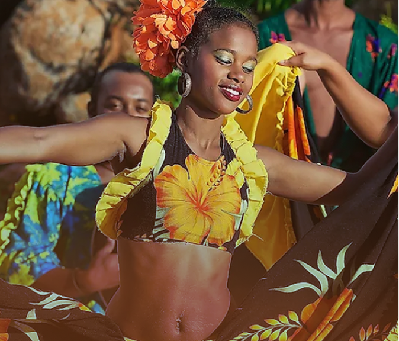
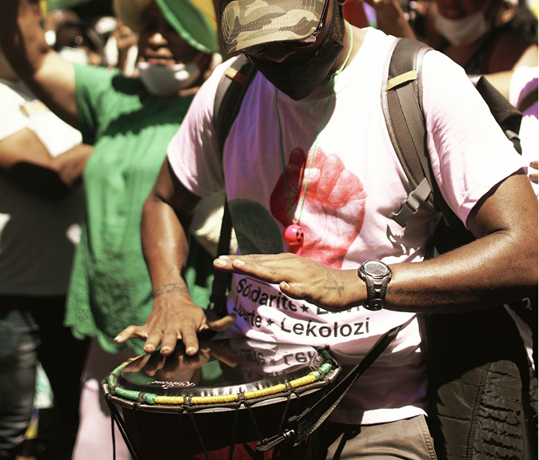
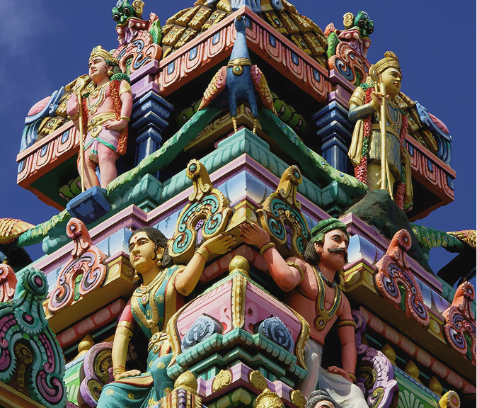
From its empty beginnings, Mauritius grew into a nation shaped by centuries of cultural exchange. This rich tapestry is evident in the nation's languages, religions, and traditions. Creole is widely spoken, alongside English and French, while Hinduism, Christianity, Islam, and other faiths are practiced across the island. From the rhythmic beats of sega music to the colorful festivals celebrated year-round, Mauritius embodies a harmonious blend of its multifaceted heritage.
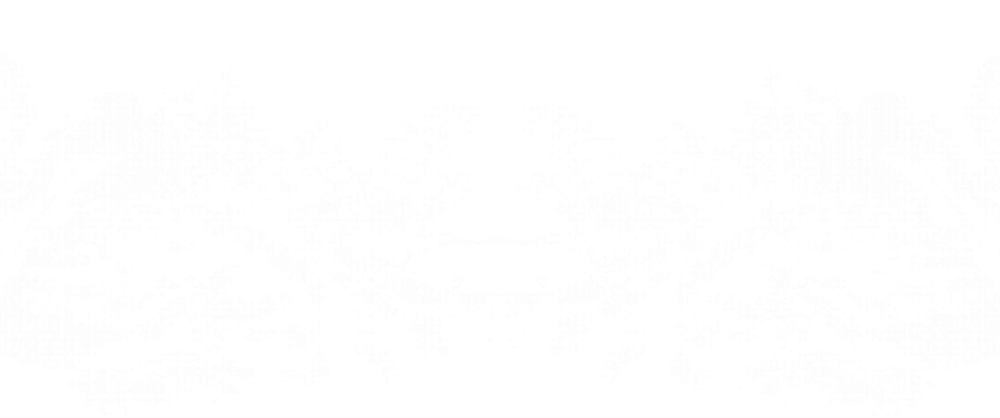
WE ARE COMMITTED TO COMMUNITY.
Our Promise to Ethical Rewilding in Mauritius
Colossal is committed to building an open and collaborative relationship with the people of Mauritius. By fostering meaningful dialogue with local communities, we aim to ensure our initiatives are both impactful and enduring. This partnership between Colossal and the people of Mauritius is rooted in inclusivity, values diverse perspectives, and strives to create a more sustainable future together.
Quote /////////
TASMANIA
Driven by a deep passion for scientific discoveries and inspired by the
dream of seeing the dodo walk the earth once more, I am pleased to lead
the
Mauritius Dodo Advisory Committee.
This journey is more than reviving a lost species–it is about honouring our island’s unique heritage.
About Devina Lobine
Dr. Devina Lobine is a bioscientist and Research Officer at the Mauritius Institute of Biotechnology Ltd (MIBL), driving efforts to establish Mauritius as a biopharmaceutical hub. With a PhD in Natural Products and postdoctoral training in pharmacology, she brings a strong record in research, teaching, and global collaboration. An award-winning scholar, she is active in science policy through groups like the Global Young Academy and INGSA-Africa, and leads initiatives such as the Global Indigenous Youth Summit on Climate Change—bridging science, sustainability, and social impact.
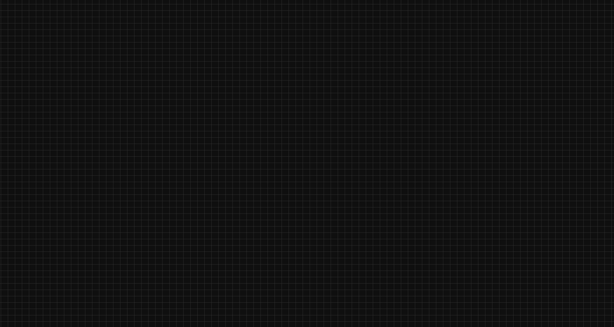
LOCAL PARTNER
devina
lobine
INdex
[ MEET THE BOARD ]
INdex
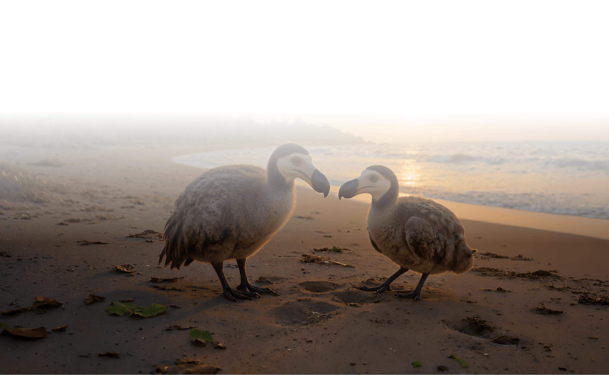
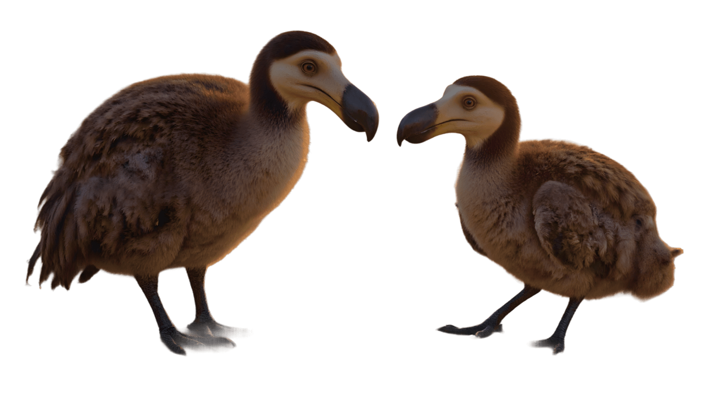
MAURITIUS DODO ADVISORY COMMITTEE
[ COMMUNITY Advisors ]
////////////////////////////////////////////////////////////////////////////////////////////////////////////////////////////////
[ 103 ]
MAURITIUS
[ team ]
[ Directory ]
Source
Colossal’s Board of Community Leaders
As part of our partnership with Mauritius, Colossal formed the Mauritius Dodo Advisory Committee, a board of qualified cultural, commercial, government, and community leaders with deep local expertise. Meeting quarterly, the Committee guides local conservation efforts and the development of a safe, responsible Dodo rewilding program, addressing feasibility, public concerns, and community needs while reviewing
updates on genomics research, biodiversity, environmental restoration, and long-term wellbeing. By supporting native wildlife, restoring habitats, and working closely with local experts, we aim to create an environment where both reintroduced and existing species can thrive. Mauritius may have once lost the Dodo, but with science, community, and conservation aligned, the island’s future can be as biodiverse as its past.

[ Vikash Tatayah ]
Conservation Director for the Mauritian Wildlife Foundation

[ Carl Jones, PhD ]
Chief Scientist, Durrell Wildlife Conservation Trust & 2016 Indianapolis Prize Laureate

[ Ananda Devi ]
Officier des Arts et des Lettres (France), Grand Officer of the Star and Key of the Indian Ocean (Mauritius), Neustadt Prize Laureate

[ Joya Bhandari ]
Environmental Consultant & Green Policy Advisor for Island Sustainability

[ Dr. Devina Lobine ]
Research Officer at the Mauritius Institute of Biotechnology & Global Leader in Science, Policy, and Innovation

[ Kallyanee Bodha ]
Chemistry Educator | Author | Advocate for Conservation

[ Dhanjay Jhurry, PhD, GOSK, CSK ]
Managing Director of Uniciti International Education Hub

[ Kevin Ramkaloan ]
CEO of Business Mauritius & Economic Policy Leader

[ Mehul Bhatt ]
Head of Strategy, Savanne Life Sciences & Board Director, Business Mauritius

[ Dr. Vidushi Neergheen ]
Director of the Doctoral School, University of Mauritius & Leading Researcher in Biopharmaceutical Innovation

[ Krishna Pentayah ]
Science Diplomat, Researcher, Mechanical Engineer, Climate & Cultural Leader, Author, Artist

[ Meiya Gujjalu ]
Conservation Student & Co-Founder of Daring Dodos

[ Vikash Rupear ]
Director, Natural History Museum of Mauritius
+
+
+
+
“I have always heard that the dodo was extinct and
that's forever. I have
spent
nearly 30 years of my life trying to save plants, reptiles, and birds. I
never
thought that in re-piecing the Mauritian ecosystems, we could even dream
of
bringing back the dodo. If we are successful, then we are allowed to
have
more
dreams. I am excited to participate in the group since we may be
writing a brand
new page of the history of Mankind–and animals!”
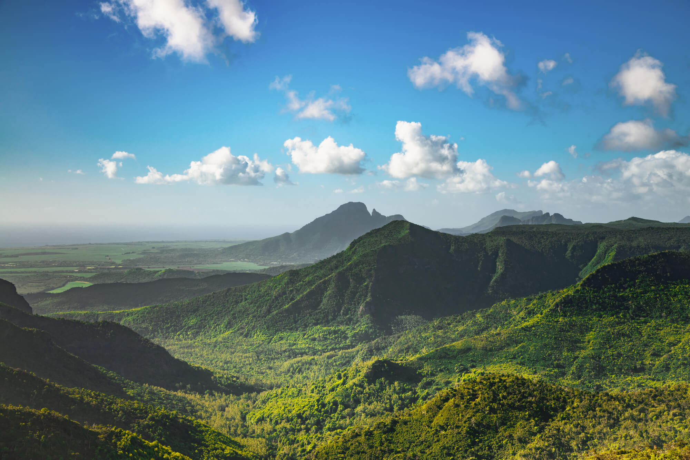
SHAPING THE CONVERSATION
Stay up to date with our latest media coverage, announcements, and stories making headlines.
BLOOMBERG
[ Source ]
Colossal Biosciences Raises $120 Million to Advance Dodo De-Extinction and Avian Research
→
TELEGRAPH
[ Source ]
Dodo Nears Return:
Colossal Biosciences’ Avian Breakthrough
→
PEOPLE MAGAZINE
[ Source ]
Company Brings the Dodo One Step Closer to De-Extinction — While Its Dire Wolves Continue to Thrive (Exclusive)
→